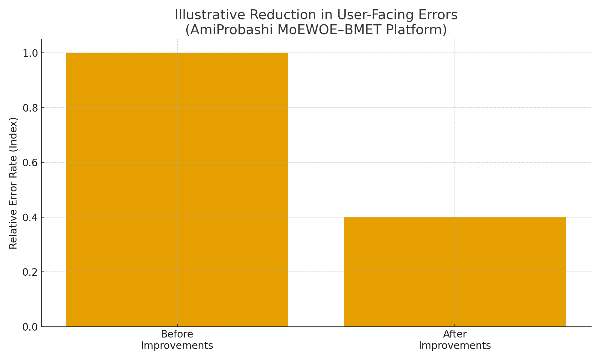
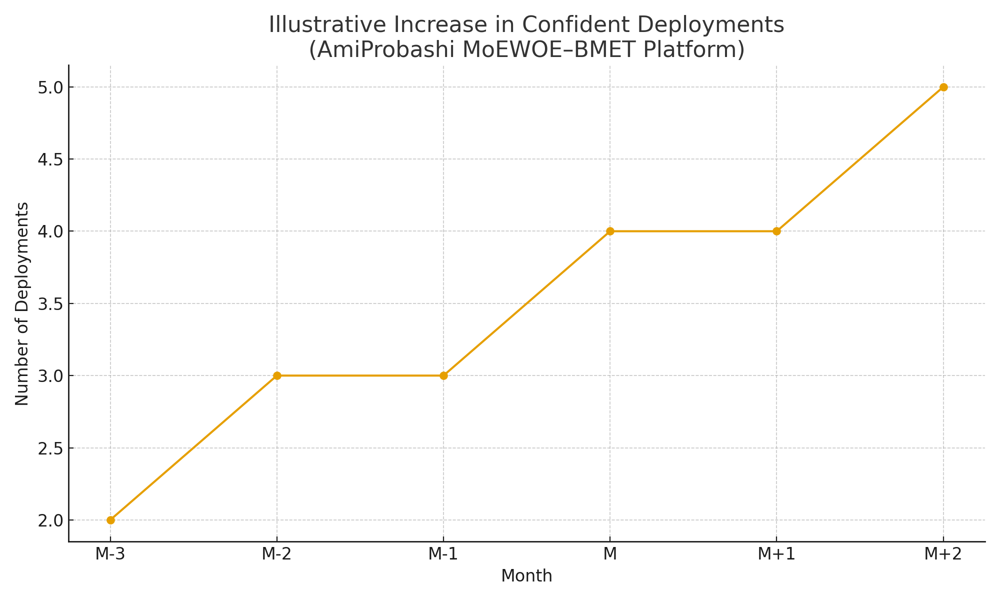

Overview
Introduction
AmiProbashi is a GovTech SaaS platform used by the Ministry of Expatriates' Welfare
and Overseas Employment (MoEWOE) and the Bureau of Manpower, Employment and Training
(BMET) to manage a national migrant worker database of approximately seven million
records. The platform underpins critical workflows such as migrant worker
registration, clearance, and fee collection, forming a strategic multi-year government
revenue channel.
As a Senior Software Engineer on the AmiProbashi team, I focused on improving the
reliability and maintainability of the core PHP/Laravel/Vue/MySQL platform. My work
centered on production-grade bug fixes, high-impact feature releases, and incremental
architectural improvements that reduced incidents and helped safeguard uninterrupted
revenue collection for government stakeholders.
Background
Context
The platform serves a diverse group of stakeholders: migrant workers, recruiting
agencies, government officials, and internal support teams. Peak traffic aligns with
policy deadlines or international hiring cycles, which generate sharp load spikes on
the core APIs and database.
When I joined, the platform was already in production but exhibited several
reliability issues:
- Intermittent application errors during peak load.
- Slow or timing-out operations on high-volume database tables (~7M records).
- Fragile release processes that occasionally caused short service disruptions.
The mandate was clear: stabilize day-to-day operations, reduce production issues, and
enable the team to deliver new features with confidence.
Challenge
Problem
The core problem was maintaining uninterrupted, reliable service for a mission-critical
government system while continuing to evolve the product. Any prolonged outage or data
integrity issue could directly affect migrant workers and disrupt government revenue
collection.
Engineering challenges included:
-
Legacy code paths in PHP/Laravel that were difficult to change safely.
-
Complex SQL queries running against large MySQL tables without optimal indexing.
-
Limited observability, making it hard to quickly pinpoint the root cause of
production incidents.
-
A deployment pipeline that relied heavily on manual steps, increasing the risk of
regression.
Execution
Implementation Highlights
1) Production bug fixes on core workflows
-
Investigated and resolved intermittent errors affecting migrant registration and
clearance flows.
-
Improved validation logic to reduce data entry errors that previously caused
downstream failures.
-
Added clearer error messages and logging around failure points, enabling faster
diagnosis.
2) Performance optimisation on high-volume queries
- Profiled slow endpoints using Laravel debug tools and database logs.
-
Simplified and restructured complex Eloquent queries hitting large tables (~7M rows).
-
Worked with the database team to introduce targeted indexes and remove unused ones.
3) Safer feature releases
- Scoped larger feature requests into smaller, deployable increments.
-
Collaborated with QA to create realistic test data sets that matched production
patterns.
The emphasis was on calm, predictable change: resolving the most painful incidents
first, then gradually tightening performance and release practices without disruptive
rewrites.
Outcomes
Impact & Outcomes
Over time, these improvements contributed to a more stable and predictable platform.
While precise figures are confidential, the overall impact can be summarised as:
- Reduction in user-facing errors during peak periods.
- Faster response times on frequently used search and reporting screens.
- Fewer emergency fixes required during or immediately after deployments.
-
Increased confidence from stakeholders in the platform's ability to support ongoing
revenue collection.
The engineering team also benefited from clearer code paths, improved logging, and a
more structured approach to releasing changes in a sensitive production environment.

Illustrative reduction in user-facing errors after stabilisation work.
Values use partial/representative data only.

Illustrative increase in confident, low-stress deployments over time as reliability
and release processes improved.
Charts intentionally avoid exposing full confidential production data; they highlight
directional impact using partial datasets.